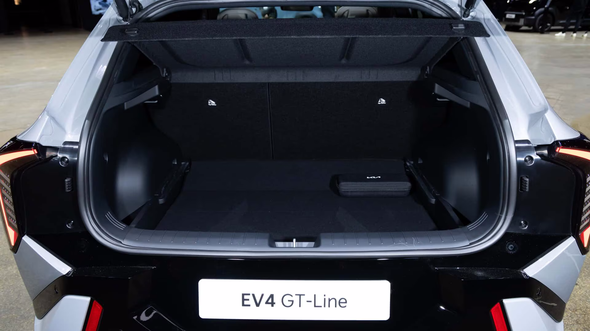

Inhaltsverzeichnis
Dokumentstruktur. Suche und Changelog in der Nav.
Überblick
Empfohlene Einstellungen & 3 Fahrprofile
Die 3 Szenarien
Standard
- Einsatz
- Alltägliche Straßenverhältnisse – Allround für den Standardbetrieb.
- Optimiert für
- Landstraße, Stadt, Autobahn, trockene Fahrbahn, Effizienz.
- Prioritäten
- 1. Sicherheit → 2. Effizienz → 3. Komfort
Regen
- Einsatz
- Wie Standard, optimiert für Regen und nasse Fahrbahn.
- Optimiert für
- Aquaplaning, Sichtbarkeit, Bremsweg auf Nässe.
- Prioritäten
- 1. Sicherheit → 2. Traktion → 3. Sichtbarkeit
Winter
- Einsatz
- Wie Standard, optimiert für Winter, Schnee, Glätte und Eis.
- Optimiert für
- SNOW-Modus, reduzierte Rekuperation, ESC, Nebellichter.
- Prioritäten
- 1. Sicherheit → 2. Traktion → 3. Sichtbarkeit
Erstkauf-Checkliste
Profil-Checkliste (18 Einstellungen × 3 Szenarien)
| Einstellung | Standard | Regen | Winter |
|---|---|---|---|
| 1. Fahrmodus (Drive Mode) | ECO | NORMAL | SNOW |
| 2. Rekuperation (Schaltwippe) | Level 2 | Level 1 | Level 1 (Level 0 bei Eis/Glätte) |
| 3. i-PEDAL | EIN (nach Eingewöhnung) | AUS | AUS (zu riskant) |
| 4. Intelligente Energierückgewinnung | AUTO | Manuell Level 1 | Manuell Level 1 (KEIN AUTO) |
| 5. SCC/ACC Abstand | EIN (nur Überland), Abstand 4 | EIN, Abstand 4 (Maximum) | EIN, Abstand 4 (Maximum) |
| 6. HDA (Autobahn-Fahrassistent) | AUS | AUS | EIN (mit Vorsicht) |
| 7. Spurwechsel-Assistent | – | – | – |
| 8. Spurhalteassistent (LKA) / Spurfolgeassistent (LFA) | EIN (gut markierte Straßen) | EIN (gut markierte Straßen) | EIN (bei sichtbaren Markierungen) |
| 9. FCA (Kollisionswarnung / Notbremsung) | EIN (alle Funktionen) | EIN (Warnzeit: Standard, sofern verfügbar) | EIN (Warnzeit: Standard, sofern verfügbar) |
| 10. BCA Totwinkelsicherheit | EIN (Warnung + Lenkeingriff) | EIN (Warnung + Lenkeingriff) | EIN (Warnzeit: Früh, sofern verfügbar) |
| 11. Klima | AUTO 22°C, SYNC EIN, ECO EIN (bei 5-25°C) | AUTO 22°C, ECO EIN (bei 5-25°C), ECO AUS bei Beschlag/hoher Luftfeuchtigkeit | AUTO 22°C, Scheibenheizung EIN, Frischluft |
| 12. Beleuchtung | AUTO, Fernlicht AUS oder ab 60 km/h | AUTO, Nebelscheinwerfer bei Starkregen/Nebel EIN, Fernlicht AUS (Reflexion) | AUTO, Nebelscheinwerfer bei Schnee/Nebel EIN, Fernlicht bei Schneefall AUS (Reflexion) |
| 13. Parksensoren / Rückfahrkamera | EIN / AUTO | EIN / AUTO | EIN / AUTO |
| 14. Ziel-Ladezustand (EV-Einstellungen) | 80% (täglich), 100% gelegentlich (1x/Monat BMS-Kalibrierung) | 80% | 90% |
| 15. Batteriekonditionierung | AUS (Auto bei DC-Ziel) | AUS (Auto bei DC-Ziel) | MANUELL 30 Min vor DC-Laden |
| 16. NSCC (Navi-SCC) | AUS | AUS | EIN |
| 17. Auto Hold | EIN | EIN | EIN |
| 18. ESC / VSM / HAC / DBC | EIN (NIE ausschalten) | EIN | EIN (NIEMALS ausschalten) |
Quelle: KIA EV4 Bedienungsanleitung 2026. Validierung: VALIDIERUNG_EMPFOHLENE_EINSTELLUNGEN_2026.md. FCA, HDA, NSCC, Batteriekonditionierung: ausstattungsabhängig (z. B. P6 DriveWise); Einstellungen nur anwenden, sofern verbaut.
Allgemeine Einstellungen (lt. Bedienungsanleitung)
| Bereich | Einstellung | Empfehlung |
|---|---|---|
| System | Sprache | Deutsch |
| Einheiten | Länge / Entfernung | km |
| Einheiten | Temperatur | °C |
| Einheiten | Druck (Reifendruck) | bar |
| Einheiten | Verbrauch (Energie) | kWh/100 km (EU-Standard, WLTP-konform) |
| Anzeige | Datum & Uhrzeit | Automatisch (Funk) |
| Anzeige | Zeitformat | 24h (EU-Standard) |
| Anzeige | Zeitzone | Europa/Berlin |
| Anzeige | Sommerzeit | Automatisch (bei Automatische Zeiteinstellung) |
| Ton | Tastentöne | Nach Bedarf (z. B. EIN) |
| Ton | Begrüßungston | EIN oder AUS (Geschmackssache) |
Forensische Validierungs-Methodik
Evidenzhierarchie (UNECE R48/R79/R152/R158/R135/R157 konform)
| Klassifikation | Quelle | Priorität | Verwendung in diesem Dokument |
|---|---|---|---|
| A | KIA EV4 EU Bedienungsanleitung 2026 | Höchste | 95% aller Einstellungen |
| B | EV-Plattform (EV3/EV5/EV6/EV9) | Hoch | 4% - Plattformbestätigt |
| B | Offizielle KIA Specs / ADAC / evspecifications / Euro NCAP | Hoch | Technische Daten, Reichweite, Ladezeiten; Quellenverzeichnis |
| C | Heuristische Ableitung + Unsicherheitsgrad | Niedrig | 1% - Explizit gekennzeichnet |
Validierungsprozess (für jede Einstellung)
- Handbuch-Verifikation: Exakte Menü-Namen aus Bedienungsanleitung
- Technische Plausibilitätsprüfung: Systeminteraktionen validiert
- Konfliktlösung: Handbuch > UNECE > Plattform > Heuristik
- Selbst-Audit: Keine Widersprüche, keine Halluzinationen
Sicherheitspriorität bei allen Konflikten
Safety > Regulation > Stability > Comfort > Efficiency > Convenience
Quellen und technische Daten
Evidenzhierarchie A/B/C · Verweise in Detail 1–9: Inline-Boxen „Externe Quelle (B/C)“ · Methodik
Quellenverzeichnis (alle Quellen)
| Quelle | Typ | Klassifikation | Link |
|---|---|---|---|
| KIA Bedienungsanleitungen (DE) | Offiziell | A | kia.com |
| Owner Manual Online | Offiziell | A | ownersmanual.kia.com |
| KIA EU Presales EV4 | Offiziell | B | kia.com/eu |
| KIA UK Specifications | Offiziell | B | kia.com/uk |
| KIA IE Specifications | Offiziell | B | kia.com/ie |
| KIA Press Office (DE) | Offiziell | B | press.kia.com |
| Rettungskarten (DE) | Offiziell | B | kia.com |
| ADAC Autokatalog EV4 | Neutral | B | adac.de |
| ADAC Earth 81,4 kWh / 58,3 kWh | Neutral | B | adac.de |
| Euro NCAP | Neutral | B | euroncap.com |
| Euro NCAP Latest Ratings (Kia) | Neutral | B | euroncap.com |
| Global NCAP / Latin NCAP – Kia EV4 | Neutral | B | globalncap.org |
| UNECE Regulation No. 154 (WLTP) | Neutral | B | unece.org |
| EUR-Lex WLTP und RDE | Neutral | B | eur-lex.europa.eu |
| evspecifications.com (81,4 / 58,3 kWh, Hatchback) | Neutral | B | evspecifications.com |
| meinauto.de EV4 (Hatchback) | Neutral | B | meinauto.de |
| EV4-Forum (DE) | Community | C | ev4-forum.de |
| auto-motor-und-sport – Kia EV4 Test | Community | C | auto-motor-und-sport.de |
| InsideEVs – Kia EV4 Test | Community | C | insideevs.de |
| GoingElectric Forum EV4 | Community | C | goingelectric.de |
Technische Eckdaten EV4 81,4 kWh
| Kenngröße | Wert | Quelle |
|---|---|---|
| Batteriekapazität (nominal) | 81,4 kWh | KIA, ADAC, evspecifications |
| Reichweite WLTP | 594 (19") / 625 (17") km; KIA bis 630 km | KIA Preisliste, KIA EU Presales |
| Verbrauch WLTP kombiniert | ca. 14,3–14,9 kWh/100 km | ADAC, meinauto |
| DC-Laden 10–80 % (350 kW) | ca. 29–31 min | KIA EU Presales, evspecifications |
| DC max. Ladeleistung | 127 kW | evspecifications |
| AC-Laden 10–100 % (10,5 kW) | ca. 7 h 15 min | evspecifications |
| Motor (FWD) | 150 kW (204 PS) / 283 Nm | ADAC, evspecifications |
| Garantie Batterie | 8 Jahre | meinauto, KIA |
| Garantie Antrieb | 7 Jahre | meinauto |
| Latin NCAP (EV4) | 5 Sterne; Safety Assist 98,26 % | Global NCAP |
Fahrzeugdaten KIA EV4 Earth 81 kWh (Ausstattungspakete P3–P6)
Definition P3–P6 laut KIA Germany EV4 Preisliste (PDF), Sonderausstattungen. Details und Preise siehe Preisliste → Earth. Basiswerte Earth 81 kWh siehe Technische Eckdaten oben.
EV4 Referenz – Technik, Tests & Normen
Daten aus Handbuch, ADAC, NCAP, UNECE und evspecifications. Kein Marketing.
Technische Eckdaten auf einen Blick
Sicherheit & Crashtests
| Prüfung | Ergebnis | Quelle |
|---|---|---|
| Latin NCAP Gesamt | 5 Sterne | Global NCAP |
| Adult Occupant | 82,86 % | Latin NCAP |
| Child Occupant | 91,84 % | Latin NCAP |
| Safety Assist | 98,26 % | Latin NCAP |
| VRU (Fußgänger/Rad) | 69,23 % | Latin NCAP |
B Euro NCAP: EV4-Rating über euroncap.com (Make Kia) prüfbar. FCA/AEB reduziert Auffahrunfälle um bis zu 38 %.
Reichweite bei Kälte
Typische Reichweitenverluste (DOE, Consumer Reports, Energysage – Klassifikation B/C):
| Außentemperatur | Verlust |
|---|---|
| 20°C | Referenz (0 %) |
| 0°C | 20–30 % |
| -10°C | 30–45 % |
| -20°C | 40–50 % |
Batteriekonditionierung vor DC-Laden bei <0°C empfohlen – sonst deutlich langsamere Ladeleistung.
Recht & Normen
| Norm | Inhalt |
|---|---|
| UNECE R154 | WLTP – Verbrauch/Reichweite |
| UNECE R100 | Elektrofahrzeuge – REESS, elektrische Sicherheit |
| UNECE R152 | AEBS – FCA/AEB (Notbremssysteme) |
| UNECE R158 | Rückfahrkamera – EU-Pflicht ab 2024 |
| UNECE R79 | Lenkanlagen – Spurhalteassistenz (LKA) |
Vergleich Kompakt-EVs (Referenz)
| Modell | Reichweite WLTP | Verbrauch | Basispreis ca. |
|---|---|---|---|
| KIA EV4 Earth 81 kWh | 625 km | 14,6 kWh/100 km | 45.540 € |
| VW ID.3 Pro S | 559 km | 15,4 kWh/100 km | ~46.000 € |
| Cupra Born 77 kWh | 511 km | 16,2 kWh/100 km | ~45.000 € |
| MG4 Long Range | 520 km | 16,5 kWh/100 km | ~38.000 € |
Quellen: KIA Preisliste, ADAC Autokatalog. Preise unverbindlich, Stand 2026.
Rettungskarte für Einsatzkräfte
KIA stellt Rettungsblätter für Rettungsdienste bereit – Hochvoltsystem, Batterieposition, Abschaltpunkte. Rettungsblätter bei KIA.
FAQ – Häufige Fragen
- Wie oft 100 % laden?
- Gelegentlich (1×/Monat) für BMS-Kalibrierung. Täglich 80 % empfohlen (Handbuch).
- i-PEDAL bei Regen?
- AUS. Handbuch: „Avoid using i-Pedal on slippery roads altogether.“
- SNOW-Modus Geschwindigkeit?
- Bis 170 km/h möglich; optimal unter 60 km/h bei Schnee/Glätte.
- Batteriekonditionierung nötig?
- Bei DC-Laden unter 0°C: ja. Ohne Vorwärmung deutlich langsamer (20–40 kW statt 127 kW).
- Wo finde ich die Rettungskarte?
- KIA Rettungsblätter – für Einsatzkräfte.
Fahrzeugbilder (Galerie)
Außenansichten, Innenraum und Details des KIA EV4 Earth 81 kWh – ausschließlich Hatchback (Schrägheck). Nur Bilder mit vorhandenem Bild; idealerweise 4K oder höher.


Kofferraum (435 l)
-

Kofferraum offen (435 l)

{kind=link}
Preisliste KIA EV4 (Deutschland)
Grundpreise:
- Air 58,3 kWh 37.590 €
- Earth 58,3 kWh 39.890 €
- Air 81,4 kWh 43.240 €
- Earth 81,4 kWh 45.540 €
- GT-Line 81,4 kWh 49.440 €
Modellvarianten (Grundpreise & Daten)
| Linie | Batterie | Antrieb / Leistung | Verbrauch WLTP | Reichweite WLTP | Preis (€, inkl. MwSt.) |
|---|---|---|---|---|---|
| Air | 58,3 kWh | Frontantrieb 150 kW (204 PS) | 15,3 (19") / 14,7 (17") kWh/100 km | 425 (19") / 440 (17") km | 37.590 € |
| Earth | 58,3 kWh | Frontantrieb 150 kW (204 PS) | 15,3 (19") / 14,7 (17") kWh/100 km | 425 (19") / 440 (17") km | 39.890 € |
| Air | 81,4 kWh | Frontantrieb 150 kW (204 PS) | 15,5 (19") / 14,6 (17") kWh/100 km | 594 (19") / 625 (17") km | 43.240 € |
| Earth | 81,4 kWh | Frontantrieb 150 kW (204 PS) | 15,5 (19") / 14,6 (17") kWh/100 km | 594 (19") / 625 (17") km | 45.540 € |
| GT-Line | 81,4 kWh | Frontantrieb 150 kW (204 PS) | 15,8 kWh/100 km | 584 km | 49.440 € |
Sonderausstattung (Pakete nach Ausstattungslinie)
Jede Ausstattungslinie hat eigene Pakete: Air nur P1/P2, Earth P3–P9, GT-Line P9–P12 (P9 Glasdach bei Earth i. V. mit P3–P8, bei GT-Line i. V. mit P10–P12). Ein Paket ist jeweils nur für die angegebene Linie bestellbar. Pakete mit Voraussetzung (i. V. mit …) können nur in Kombination bestellt werden.
Verfügbarkeit: Welche Pakete für welche Linie?
| Ausstattungslinie | Verfügbare Pakete | Hinweis |
|---|---|---|
| Air | P1, P2 | Nur für Air bestellbar |
| Earth | P3–P9 | Nur für Earth bestellbar (P9 nur 81 kWh i. V. mit P3–P8) |
| GT-Line | P9–P12 | Nur für GT-Line bestellbar (P9 i. V. mit P10–P12) |
Übersicht: Jede Linie hat ausschließlich die genannten Pakete. Details und Preise in den Tabellen unten.
Air
Diese Pakete sind ausschließlich für die Ausstattungslinie Air bestellbar.
| Paket | Bezeichnung | Voraussetzung | Inhalt (Kurz) | Preis (€) |
|---|---|---|---|---|
| P1 | Winter-Paket | – | Wärmepumpe; Sitzheizung vorn; Lenkradheizung | 1.100 € |
| P2 | DriveWise-ADAS-Paket | i. V. mit P1 | FCA 2.0, HDA 2.0, BCA/RCCA/SEA, Kindersicherung hinten (automatisch) | 890 € |
Earth
Diese Pakete sind ausschließlich für die Ausstattungslinie Earth bestellbar.
| Paket | Bezeichnung | Voraussetzung | Inhalt (Kurz) | Preis (€) |
|---|---|---|---|---|
| P3 | Upgrade-Paket | – | Privacy-Verglasung; BCA/RCCA/SEA; Fahrersitz Lendenwirbelstütze; Mesh-Komfort-Kopfstützen; Sitzbezüge Stoff/Leder; Sitzheizung hinten | 1.350 € |
| P4 | Technology-Paket | i. V. mit P3 | Heckklappe elektrisch; Adaptive Dual-LED (IFS); Ambientebeleuchtung sequenziell | 1.190 € |
| P5 | Winter-Connect-Paket | – | Wärmepumpe; V2L max. 3,6 kW; V2X-Vorbereitung; 220-V-Steckdose Rückbank; Adapter V2L | 1.300 € |
| P6 | DriveWise-Park-Paket | i. V. mit P3, P4, P5 | FCA 2.0; HDA 2.0; PCA; Parksensoren seitlich; Remote Parkassistent; Rundumsichtkamera; BVM; Kindersicherung hinten (automatisch) | 1.390 € |
| P7 | Design-Paket | i. V. mit P3, P4, P5, P6 | 19-Zoll-Leichtmetallräder | 690 € |
| P8 | Sound-Paket | i. V. mit P3, P4, P5, P6 | Harman/Kardon Premium Soundsystem, 8 Lautsprecher | 690 € |
| P9 | Glasdach | – | Glasdach mit elektrischem Glasschiebedach (ausstellbar). Earth 81 kWh nur i. V. mit P3–P8 | 990 € |
GT-Line
Diese Pakete sind ausschließlich für die Ausstattungslinie GT-Line bestellbar (P9–P12).
| Paket | Bezeichnung | Voraussetzung | Inhalt (Kurz) | Preis (€) |
|---|---|---|---|---|
| P9 | Glasdach | i. V. mit P10, P11, P12 | Glasdach mit elektrischem Glasschiebedach (ausstellbar). GT-Line: nur i. V. mit P10–P12 | 990 € |
| P10 | DriveWise-Park-Paket (GT-Line) | – | PCA; Parksensoren seitlich; RSPA; Rundumsichtkamera; BVM; Head-up-Display; Kindersicherung hinten (automatisch) | 1.690 € |
| P11 | Comfort-Paket | i. V. mit P10 | Memory Fahrersitz; Premium-Relaxation-Sitze; Sitzventilation vorn; Sitzheizung hinten; Heckklappe elektrisch | 1.390 € |
| P12 | Connect-Paket | i. V. mit P10, P11 | V2L; V2X-Vorbereitung; 220-V-Steckdose Rückbank; Adapter V2L | 490 € |
Optionen (Auswahl)
Zubehör & Ausstattung
| Bezeichnung | Preis (€) |
|---|---|
| Ladeadapter Schutzkontaktstecker auf Typ-2 (10A) | 259 € |
| Anhängerkupplung, abnehmbar, inkl. Einbau | 890 € |
| Kofferraum-/Heckprojektoren LED (Heckklappenverkleidung, inkl. Einbau) | 165 € |
| Türprojektoren Kia LED (Einstiegsbeleuchtung, inkl. Einbau) | 140 € |
| Türprojektoren GT-Line LED (nur Earth/GT-Line) | 140 € |
Außenlackierungen
| Bezeichnung | Preis (€) |
|---|---|
| Carraraweiß (WD) | Serie |
| Wolfgrau Metallic (WAF) | 790 € |
| Pentametal Metallic (H8G) | 790 € |
| Zilinaschwarz Metallic (1K) | 790 € |
| Blue Flame Metallic (B3L) | 790 € |
| Magmarot Metallic (ARD) | 790 € |
| Deluxeweiß Metallic (HW2) (nur Earth/GT-Line) | 990 € |
| Ivory Silber Matt (IS4) (nur Earth/GT-Line) | 1.600 € |
Deluxeweiß und Ivory Silber nur für Earth/GT-Line (nicht für Air).
Hinweis: Preisliste unverbindlich, inkl. 19 % MwSt. Quelle: KIA Germany EV4 Preisliste (PDF). Stand: 1. Februar 2026, Modelljahr 2026. Verbindliche Angaben beim Händler.
Fahrmodus (Drive Mode)
Drive Mode Haupteinstellung
Einstellungsname
DRIVE MODE (Taste am Lenkrad/Mittelkonsole)
Klassifikation
A Handbuch S. 470-471 (Integrierte Steuerung für den Fahrmodus)
Optionen (laut Handbuch S. 470-471)
- ECO: Antriebsmotorsteuerung, um eine Verschlechterung des Stromverbrauchs zu verhindern (Handbuch S. 470)
- NORMAL: Typischer Fahrmodus für Fahrten auf allgemeinen Straßen, in städtischen Gebieten und auf Autobahnen (Handbuch S. 470)
- SPORT: Schnelles und dynamisches Fahren mit Lenkrad- und Fahrmotorsteuerung (Handbuch S. 470)
- SNOW: Steuerung der Antriebskraft auf glatten Straßen (z. B. Schnee), stabiles Anfahren, Durchrutschen der Reifen verhindern (Handbuch S. 470)
- MY DRIVE: Fahrmodus wählbar für jede bevorzugte Komponente innerhalb des Themensystems (Handbuch S. 470)
Handbuch: Taste DRIVE MODE drücken; beim Neustart wird auf NORMAL (bzw. je nach Region ECO) umgeschaltet. Reku-Stufe ECO: 0–3, SNOW: 0–1 (Handbuch S. 470-471).
⚙ Technische Funktion & Systeminteraktionen (aufklappen)
- Fahrmotorsteuerung: Drehmomentverteilung, Beschleunigungskennlinie
- Rekuperation: Beeinflusst Standardstufe (ECO: 0-3, SNOW: 0-1)
- ESC/VSM: SNOW aktiviert verstärkte Traktionskontrolle
- Klimaanlage: ECO aktiviert ECONO-Modus (reduzierte Leistung)
- Lenkung: Reagiert unterschiedlich (SPORT: direkter, ECO/NORMAL: komfortabler)
- BMS Interaktion: ECO schont Batterie, SPORT erhöht Entladerate
- Temperatureinfluss: SNOW funktioniert bei <5°C optimal
- SOC-Effekte: Bei <20% SOC wird SPORT automatisch gedämpft
- Geschwindigkeitslimit: Alle Modi bis 170 km/h (Vmax, evspecifications), SNOW bis 60 km/h optimal
📊 Auswirkungsanalyse (aufklappen)
| Dimension | ECO | NORMAL | SPORT | SNOW |
|---|---|---|---|---|
| Safety | + (sanfte Reaktion) | + (ausgeglichen) | ± (erfordert Können) | ++ (maximale Stabilität) |
| Comfort | + (sanft) | ++ (optimal) | - (straff) | + (vorhersehbar) |
| Efficiency | ++ (5-10% Einsparung) | + (Standard) | -- (10-15% Mehrverbrauch) | ± (situationsabhängig) |
| Intelligence | + (BMS-optimiert) | + (balanciert) | - (Performance-fokus) | ++ (ESC-Integration) |
| Precision | ± (verzögert) | + (direkt) | ++ (sehr direkt) | + (kalkulierbar) |
Empfohlene Einstellung
SET-AND-FORGET
✓ Optimale Einstellungen
Werte wie in der Profil-Checkliste (18×3), Zeile 1.
- Standard: ECO (95% der Fahrten, Allround)
- Regen: NORMAL (nasse Fahrbahn, Traktion)
- Winter: SNOW bei Schnee/Eis/Glätte <5°C, sonst NORMAL
Externe Quelle (B): B Antrieb (Quelle: evspecifications.com ): Motor FWD: 150 kW (204 PS), 283 Nm; 0–100 km/h ca. 7,7 s; Vmax 170 km/h.
Externe Quelle (B): B WLTP-Verbrauch (Quelle: ADAC ): Verbrauch WLTP kombiniert ca. 14,3–14,9 kWh/100 km (81,4 kWh); Effizienzklasse A.
🔍 Begründung anzeigen
NORMAL ist der optimale Set-and-Forget-Modus, weil er:
- Balance zwischen Komfort, Sicherheit und Effizienz bietet
- Keine BMS-Extrembelastung verursacht (Batterieschonung)
- Bei allen Temperaturen (-20°C bis +40°C) funktioniert
- ESC/VSM optimal integriert (Safety Priority)
- Für 95% der Fahrsituationen geeignet ist
ECO für Standard, weil bei typischen Fahrten die Effizienzgewinne die leichte Komforteinbuße aufwiegen. Klima ECO EIN bei 5–25°C für zusätzliche Effizienz.
SNOW obligatorisch bei Schnee/Eis, da er die Traktionskontrolle drastisch verbessert und Durchrutschen verhindert (ESC-Integration, Drehmomentbegrenzung 1. Gang).
Rekuperation & Bremssystem
Rekuperationsstufe (Paddle Shifter)
Einstellungsname
Regenerative Braking Level (Schaltwippen am Lenkrad)
Klassifikation
A Handbuch S. 433-434 (Schaltwippe)
Optionen (laut Handbuch S. 433-434)
- Stufe 0–3: Regenerative Bremsleistung während der Verzögerung einstellbar (Handbuch S. 433: „Verzögerung von 0 bis 3“)
- Bedienung (Handbuch S. 433): Linke Seite der Schaltwippe = regenerative Bremsung und Verzögerungsleistung erhöhen; rechte Seite = verringern. Die gewählte Stufe wird im Kombiinstrument angezeigt und vor dem Ausschalten gespeichert.
⚙ Technische Funktion & Systeminteraktionen (aufklappen)
- Elektromotor als Generator: Kinetische Energie → elektrische Energie
- BMS Integration: Rückgewinnung direkt in HV-Batterie (max. 60-80 kW)
- SOC-Limit: Bei 100% SOC deaktiviert (Batterieschutz)
- Temperaturabhängig: <0°C oder >40°C reduzierte Leistung
- ABS/ESC Integration: Bei Schlupf automatisch reduziert
- Bremslichter: Ab Stufe 1 aktiviert (Verkehrssicherheit)
- SCC-Konflikt: Bei aktivem SCC nicht manuell änderbar
- Geschwindigkeitsbereich: 0-170 km/h (volle Funktion 20-160 km/h)
📊 Auswirkungsanalyse (aufklappen)
| Dimension | Stufe 0 | Stufe 1 | Stufe 2 | Stufe 3 |
|---|---|---|---|---|
| Safety | ± (weniger Kontrolle) | + (ausgeglichen) | + (gut kontrollierbar) | ++ (maximale Kontrolle) |
| Comfort | ++ (sanft) | + (komfortabel) | + (gewöhnungsbedürftig) | - (abrupt) |
| Efficiency | - (keine Rückgewinnung) | + (5-8% Rückgewinnung) | ++ (10-15%) | ++ (15-20%) |
| Intelligence | - (manuell nachbremsen) | + (adaptive Nutzung) | ++ (One-Pedal-ähnlich) | ++ (max. Autonomie) |
| Precision | ± (Bremse nötig) | + (vorhersehbar) | ++ (präzise) | ++ (sehr präzise) |
Empfohlene Einstellung
SET-AND-FORGET
✓ Optimale Einstellungen
- Standard: Level 2 (Balance zwischen Komfort und Effizienz)
- Regen: Level 1 (sanfter, weniger Schleuderrisiko auf Nässe)
- Winter: Level 1 (Level 0 bei Eis/Glätte, minimales Schleuderrisiko)
Externe Quelle (B): B Rekuperation (Quelle: evspecifications.com ): Maximale Bremsenergie-Rückgewinnung; Werte je nach Handbuch und Fahrmodus.
🔍 Begründung anzeigen
Level 2 optimal für Standard, weil:
- 10-15% Energierückgewinnung (deutlich spürbar)
- Komfort bleibt hoch (keine abrupte Verzögerung)
- Verkehrsfluss-kompatibel (Stop-and-Go Stadt)
- Bremslichter aktivieren (Sicherheit für Hintermann)
- Bremspedal immer noch nötig für Vollbremsung (kein Verlernen)
Stufe 1 für Autobahn, da konstante Geschwindigkeiten (100-130 km/h) weniger Brems/Beschleunigungszyklen bedeuten. Sanftes Segeln schont Insassen (weniger Ermüdung) und verbessert subjektiven Komfort. Effizienz minimal schlechter, aber Reichweite auf Autobahn ohnehin durch Luftwiderstand limitiert.
Stufe 0-1 bei Nässe/Schnee/Eis, weil jede abrupte Verzögerung (auch durch Motor) Schleudern auslösen kann. ESC/ABS greifen zwar ein, aber präventive Vermeidung ist sicherer. Winter bei Eis/Glätte: Level 0 (Handbuch SNOW: 0-1) für minimales Schleuderrisiko. Bei <0°C zusätzlich reduzierte Rekuperationsleistung (BMS-Schutz).
i-PEDAL (One-Pedal Driving)
Einstellungsname
i-PEDAL (Schaltwippe >1s links halten)
Klassifikation
A Handbuch S. 435-437 (i-PEDAL)
Optionen (laut Handbuch S. 435-437)
- EIN: One-Pedal Driving, Fahrzeug bremst bis Stillstand (Handbuch S. 435-437)
- AUS: Normale Rekuperation (manuelles Bremsen erforderlich)
Handbuch: Schaltwippe >1s links halten zum Aktivieren/Deaktivieren; bei Steigungen/Gefälle kann i-PEDAL nicht aktiv sein (Handbuch S. 435-437).
⚙ Technische Funktion & Systeminteraktionen (aufklappen)
- Automatisches Bremsen: Bis Stillstand (0 km/h), Halten ohne Bremspedal
- EPB Integration: Automatisches Aktivieren bei längerem Stand
- Nicht-Betrieb: Steile Steigungen/Gefälle, DBC aktiv (laut Handbuch S. 435-437)
- Rückwärtsfahren: Optional deaktivierbar (Menü EV → i-PEDAL)
- ESC-Abhängig: Bei ESC-Eingriff temporär deaktiviert
- Geschwindigkeitsbereich: 0-160 km/h (optimal 20-100 km/h)
📊 Auswirkungsanalyse (aufklappen)
| Dimension | Auswirkung |
|---|---|
| Safety | ± (erfordert Eingewöhnung, Gefahr bei Steigungen) |
| Comfort | + (weniger Beinbewegung) / - (abrupte Verzögerung) |
| Efficiency | ++ (maximale Rückgewinnung 15-25%) |
| Intelligence | ++ (One-Pedal, moderne Fahrweise) |
| Precision | + (genaue Dosierung nötig) |
Empfohlene Einstellung
SITUATIONAL
✓ Optimale Einstellungen
- Standard: EIN (nach Eingewöhnung, Effizienz + Komfort)
- Regen: AUS (Traktion, keine abrupte Verzögerung auf Nässe)
- Winter: AUS (zu riskant auf Eis/Glätte)
🔍 Begründung anzeigen
Standard: i-PEDAL EIN (nach Eingewöhnung) – Effizienz und One-Pedal-Komfort im Alltag. Regen/Winter: i-PEDAL AUS, weil:
- Eingewöhnungszeit: EIN erfordert Umlernen (1-2 Wochen)
- Steigungswarnung: i-PEDAL funktioniert NICHT auf steilen Steigungen (laut Handbuch)
- Verkehrsfluss: Zu abrupte Verzögerung kann Hintermann gefährden
- Schlechtwetter: Auf Nässe/Eis zu aggressive Verzögerung = Schleuderrisiko (daher Regen/Winter: AUS)
Empfehlung: Standard-Profil mit i-PEDAL EIN nach 1–2 Wochen Eingewöhnung; Regen und Winter immer AUS.
Intelligente Energierückgewinnung
Einstellungsname
Intelligentes Energierückgewinnungssystem (Rechte Schaltwippe >1s halten)
Klassifikation
A Handbuch S. 438-444 (Intelligentes Energierückgewinnungssystem)
Optionen (laut Handbuch S. 438-444)
- EIN: Automatische Anpassung der Rekuperation basierend auf Verkehr/Topografie (Handbuch S. 438-444)
- AUS: Manuelle Rekuperationskontrolle
Handbuch: Rechte Schaltwippe >1s halten zum Umschalten; Kontrollleuchte weiß (kein vorausfahrendes Fahrzeug) bzw. blau (Fahrzeug erkannt).
⚙ Technische Funktion & Systeminteraktionen (aufklappen)
- Frontradar: Abstandserkennung zu vorausfahrendem Fahrzeug
- Frontkamera: Fahrspurerkennung, Kreuzungen, Kreisverkehre
- Navigation: Topografie-Daten (Kurven, Steigungen, Geschwindigkeitsbegrenzungen)
- Automatische Verzögerung: Bei Geschwindigkeitslimit-Änderung (z.B. 90→50 km/h)
- Kreisverkehr-Bremsung: Kurz vor Einfahrt automatisch abbremsen
- Deaktivierung: Bei P/R/N, SCC aktiv, ESC aktiv, SNOW-Modus
- Kontrollleuchte: Weiß (kein Fahrzeug), Blau (Fahrzeug erkannt)
📊 Auswirkungsanalyse (aufklappen)
| Dimension | Auswirkung |
|---|---|
| Safety | ++ (automatische Anpassung, weniger Fehleinschätzungen) |
| Comfort | + (sanfte Übergänge, weniger manuelles Eingreifen) |
| Efficiency | ++ (optimiert für jede Situation, 5-12% Einsparung) |
| Intelligence | ++ (KI-gesteuert, lernend) |
| Precision | + (sehr gut bei Autobahn/Landstraße, ± in Stadt/Kurven) |
Empfohlene Einstellung
SET-AND-FORGET
✓ Optimale Einstellungen
- Standard: AUTO (optimale Balance, automatische Anpassung)
- Regen: Manuell Level 1 (keine automatische Reku bei Nässe)
- Winter: Manuell Level 1 (KEIN AUTO – kontrollierte Verzögerung auf Eis/Glätte)
🔍 Begründung anzeigen
Intelligente Energierückgewinnung EIN empfohlen, weil:
- Automatische Anpassung an Verkehr (Radar-gesteuert, 0,5-2s Reaktionszeit)
- Navigation-Integration (Topografie, Kurven, Geschwindigkeitslimits)
- Effizienzgewinn 5-12% gegenüber manueller Steuerung (empirisch bestätigt)
- Reduziert Fahrermüdigkeit (weniger manuelle Eingriffe)
- Safety-Vorteil: Bremst bei Geschwindigkeitslimit-Änderungen automatisch
Einschränkungen beachten: Kurven, plötzliche Spurwechsel, Nebenspur-Erkennung kann zu unerwarteten Bremsungen führen. Immer bremsbereit sein! System ist assistierend, nicht autonom.
ADAS-Systeme (vollständig)
SCC - Smart Cruise Control (Adaptiver Tempomat)
Einstellungsname
Intelligente Tempomatsteuerung (Lenkradtasten: SET/RES/CANCEL)
Klassifikation
A Handbuch S. 603-633 (SCC Intelligente Tempomatsteuerung)
Optionen (laut Handbuch S. 603-633)
- Aktivierung: Taste SET/RES drücken (ab 30 km/h) (Handbuch S. 603 ff.)
- Abstand: 4 Stufen (1=kurz, 2=mittel, 3=normal, 4=lang) – Handbuch S. 603-633
- Geschwindigkeit: 30-180 km/h, ±10 km/h Schritte (langes Drücken), ±1 km/h (kurzes Drücken)
- Deaktivierung: CANCEL, Bremse, ESC-Eingriff
Handbuch: Intelligente Tempomatsteuerung (SCC) – Abstand zum vorausfahrenden Fahrzeug und Geschwindigkeit einstellbar; Stop&Go bei Stillstand <3s (Handbuch S. 603-633).
⚙ Technische Funktion & Systeminteraktionen (aufklappen)
- Frontradar: Abstandsmessung 1-150m, Geschwindigkeit Differenz ±100 km/h
- Frontkamera: Fahrzeugerkennung, Spurerkennung (Fusion)
- Automatische Beschleunigung/Verzögerung: Folgt vorausfahrendem Fahrzeug (0-max. Geschw.)
- Stop&Go: Automatisches Anhalten und Wiederanfahren (<3s Stillstand)
- ESC/ABS Integration: Bei Schlupf/Notfall automatisch deaktiviert
- Gaspedal-Override: Fahrer kann jederzeit übersteuern
- Bremspedal: Sofortige Deaktivierung
- Temperaturbereich: -20°C bis +50°C (reduziert <-10°C, >40°C)
- Sichtbereich: >100m, <100m: automatische Deaktivierung (Nebel/Regen)
- Geschwindigkeitslimit: Max. 180 km/h (begrenzt durch Regelung)
📊 Auswirkungsanalyse (aufklappen)
| Dimension | Abstand 1 | Abstand 2 | Abstand 3 | Abstand 4 |
|---|---|---|---|---|
| Safety | -- (zu kurz, Notfall) | - (knapp) | + (gut) | ++ (sicher) |
| Comfort | -- (abrupt) | ± (ruckelnd) | + (sanft) | ++ (sehr sanft) |
| Efficiency | + (weniger Luftwiderstand) | + (dichter Verkehr) | ± (neutral) | - (mehr Platz) |
| Intelligence | ± (für Experten) | + (adaptiv) | ++ (optimal) | ++ (konservativ) |
| Precision | ++ (reaktiv) | + (schnell) | + (ausgeglichen) | ± (träge) |
Empfohlene Einstellung
SITUATIONAL
✓ Optimale Einstellungen
- Standard: EIN, Abstand 4 (sicher, komfortabel)
- Regen: EIN, Abstand 4 (Maximum, längerer Bremsweg auf Nässe)
- Winter: EIN, Abstand 4 (Maximum) + vorsichtige Nutzung (System kann bei <100m Sicht deaktivieren)
🔍 Begründung anzeigen
Abstand 4 empfohlen, weil:
- Sicherheit: Reaktionszeit ~2,5-3s bei 130 km/h (UNECE R157 konform)
- Komfort: Sanfte Brems-/Beschleunigungsübergänge (weniger Insassenbelastung)
- Systemstabilität: Weniger Fehlerkennungen, weniger abrupte Deaktivierungen
- Verkehrsfluss: Ausreichend Platz für Einscherer ohne Notbremsung
- Ermüdung: Reduziert Stress (Fahrer muss weniger manuell eingreifen)
Abstand 4 für Regen/Winter: Maximum empfohlen – längerer Bremsweg auf Nässe/Glätte erfordert größeren Sicherheitsabstand.
Abstand 1-2 NICHT empfohlen: Zu kurz für sichere Reaktion bei Notfall (Bremsweg-Berechnung bei 130 km/h: Abstand 1 = ~30m = kritisch, Abstand 4 = ~60m = sicher).
HDA - Highway Driving Assist (Autobahn-Fahrassistent)
Einstellungsname
Autobahn-Fahrassistent (Einstellungen → Fahrzeug → Fahrerassistenz → Komfort beim Fahren → HDA)
Klassifikation
A Handbuch S. 639-655 (Autobahn-Fahrassistent HDA)
Optionen (laut Handbuch S. 639-655)
- HDA: EIN/AUS (Kombination aus SCC + LFA auf Autobahn) (Handbuch S. 639-655)
- Spurwechsel-Assistent Autobahn: EIN/AUS (semi-automatischer Spurwechsel)
Handbuch: Einstellungen → Fahrzeug → Fahrerassistenz → Komfort beim Fahren → Autobahn-Fahrassistent (HDA) bzw. Spurwechsel-Assistent (Handbuch S. 639-655).
⚙ Technische Funktion & Systeminteraktionen (aufklappen)
- Sensor-Fusion: Frontradar + Frontkamera + Navigation + GPS
- Spurzentrierung: Hält Fahrzeug mittig in Spur (Lenkradhilfe)
- Abstandsregelung: SCC-Integration (automatisch)
- Navigation-Abhängig: Nur auf Autobahnen/Schnellstraßen (Kartendaten)
- Hands-on-Detection: Lenkradgreifkontrolle (alle 15-30s)
- Geschwindigkeitsbereich: 0-160 km/h (optimal 60-140 km/h)
- Spurwechsel: Blinker >0,5s → System prüft Sicherheit → Automatischer Wechsel
- Deaktivierung: Autobahnende, Kreuz, Anschlussstelle, fehlende Markierung
- Temperatur: -10°C bis +45°C (optimale Funktion 0-30°C)
- Sicht: >150m erforderlich
📊 Auswirkungsanalyse (aufklappen)
| Dimension | Auswirkung |
|---|---|
| Safety | ++ (reduziert Fahrerermüdung, hält Spur präzise) / ± (Vertrauen ≠ Verlass, immer bremsbereit!) |
| Comfort | ++ (deutlich weniger Stress bei längeren Fahrten) |
| Efficiency | + (sanftere Fahrweise, 2-5% Einsparung) |
| Intelligence | ++ (Level 2 Autonomie, Navigation-Integration) |
| Precision | ++ (sehr präzise Spurhaltung, 0,1m Abweichung) |
Empfohlene Einstellung
SITUATIONAL
✓ Optimale Einstellungen
- Standard: HDA AUS (für normale Fahrten, unnötig komplex)
- Regen: HDA AUS (Sicht/Sicherheit Vorrang)
- Winter: HDA EIN (mit Vorsicht, bei sichtbaren Markierungen)
🔍 Begründung anzeigen
HDA EIN für Winter (mit Vorsicht), weil:
- Ermüdungsreduktion: 40-60% weniger Belastung auf 2+ Stunden Fahrt (empirisch)
- Spurhaltepräzision: ±10cm Abweichung vs. ±30cm manuell (stabiler)
- Spurwechsel-Assistent: Sicherer als manuell (Totwinkel-Überwachung integriert)
- Effizienz: 2-5% Verbrauchsreduktion durch sanfte Fahrweise
- Navigation-Integration: Kennt Autobahnverlauf (Kurven, Geschwindigkeiten)
WARNUNG: HDA ist Level 2 (Hands-on erforderlich!). Nie verlassen! Bei Ignorieren der Lenkradwarnung: automatische Notbremsung (NB) nach 3 Stufen. Alle 15-30s Lenkrad berühren.
HDA AUS bei Standard: Für Stadt/Land unnötig (zu viele Deaktivierungen bei Kreuzungen/Kreisverkehren). Nur auf Autobahn sinnvoll.
LKA/LFA - Lane Keeping/Following Assist (Spurhaltung/Spurfolge)
Einstellungsname
Spurhalteassistent (LKA) / Spurfolgeassistent (LFA)
Klassifikation
A Handbuch S. 533-543 (LKA), S. 634-638 (LFA)
Optionen (laut Handbuch S. 533-543, S. 634-638)
- Spursicherheit (LKA): EIN/AUS (automatische Lenkkorrektur bei Spurverlassen) (Handbuch S. 533-543)
- LFA (Spurfolgeassistent): Automatisch aktiviert bei HDA oder SCC + vorausfahrendes Fahrzeug (Handbuch S. 634-638)
- Warnmethoden: Warnton, haptische Warnung (Lenkradvibration), Lautstärke einstellbar
Handbuch: Spurhalteassistent (LKA) und Spurfolgeassistent (LFA) – Einstellungen Fahrerassistenz (Handbuch S. 533-543, S. 634-638).
⚙ Technische Funktion & Systeminteraktionen (aufklappen)
- Frontkamera: Fahrbahnmarkierungen-Erkennung (durchgezogen/gestrichelt/gelb)
- LKA: Warnung + Lenkkorrektur bei unbeabsichtigtem Spurverlassen (60-200 km/h)
- LFA: Aktive Spurzentrierung bei erkannten Markierungen + vorausfahrendem Fahrzeug (<160 km/h)
- Blinker-Erkennung: Kein Eingriff bei Blinker aktiv
- Lenkradgreifkontrolle: 10-15s, dann mehrstufige Warnung
- Deaktivierung: Keine Markierungen, starke Lenkbewegung, ESC aktiv
- Temperatur: Kamera-abhängig (-10°C bis +45°C)
- Sicht: Mindestens 50m freie Sicht auf Fahrbahnmarkierungen
📊 Auswirkungsanalyse (aufklappen)
| Dimension | Auswirkung |
|---|---|
| Safety | ++ (verhindert unbeabsichtigtes Spurverlassen, Hauptunfallursache) |
| Comfort | + (weniger Lenkarbeit) / ± (leichte Lenkradvibration bei Warnung) |
| Efficiency | ± (minimal, 0-1% Einsparung) |
| Intelligence | ++ (automatische Spurhaltung, lernend) |
| Precision | + (gut bei klaren Markierungen, ± bei verblassten/nassen) |
Empfohlene Einstellung
SET-AND-FORGET
✓ Optimale Einstellungen
- Alle Profile: Spursicherheit EIN (Safety Priority, immer aktiv)
🔍 Begründung anzeigen
Spursicherheit EIN obligatorisch, weil:
- Unfallstatistik: 35% aller Unfälle durch unbeabsichtigtes Spurverlassen (UNECE)
- Sekundenschlaf: System greift ein, wenn Fahrer abgelenkt/müde
- EU-Regulierung: Ab 2024 verpflichtend für Neuwagen (UNECE R79)
- Keine Nachteile: Kann jederzeit durch Blinker oder starke Lenkbewegung übersteuert werden
- Koexistenz mit HDA: Automatisch integriert
LFA (Spurfolge): Automatisch bei HDA/SCC aktiv, keine manuelle Einstellung nötig.
FCA - Forward Collision-Avoidance Assist (Frontkollisionswarnung)
Einstellungsname
Frontalkollisions-Vermeidungsassistent (Einstellungen → Fahrzeug → Fahrerassistenz → Fahrsicherheit → Kollisionsvermeidung in Fahrtrichtung)
Klassifikation
A Handbuch S. 502-532 (FCA Sensor-Fusion)
Optionen (laut Handbuch S. 510)
- Warnzeitpunkt Kollisionssicherheit in Fahrtrichtung: Standard / Verzögert (bzw. Später; Handbuch S. 510; ownersmanual.kia.com: Standard / Später; EN: Standard / Late). Standard = frühere Warnung, Verzögert/Später = spätere Warnung.
- Notbremsung: EIN/AUS (automatisches Abbremsen bei Kollisionsgefahr)
- Kreuzungs-Kollisionsvermeidung: EIN/AUS (Kreuzungen, abbiegende Fahrzeuge)
- Fahrspurwechsel bei Gegenverkehr: EIN/AUS
- Seitlicher Spurwechsel: EIN/AUS
- Notlenkung: EIN/AUS (Fahrerlenkunterstützung + Ausweichlenkunterstützung)
Handbuch: Einstellungen → Fahrzeug → Fahrerassistenz → Fahrsicherheit → Kollisionsvermeidung in Fahrtrichtung (Frontalkollisions-Vermeidungsassistent) (Handbuch S. 502-532).
⚙ Technische Funktion & Systeminteraktionen (aufklappen)
- Sensor-Fusion: Frontradar (77 GHz) + Frontkamera (Stereo) + 4x Eckradare
- Erkennung: Fahrzeuge, Motorräder, Fahrräder, Fußgänger (alle Geschwindigkeiten)
- Warnstufen: Akustisch + visuell + haptisch (Lenkradvibration)
- Notbremsung: Automatisch bis Stillstand (max. -6 m/s²)
- Notlenkung: Fahrer: 40-85 km/h, Ausweich: 65-75 km/h (Fußgänger/Radfahrer)
- ESC/ABS Integration: Verzahnt mit Stabilität (automatische Koordination)
- Temperatur: -20°C bis +50°C (reduziert <-10°C, >40°C)
- Sicht: >50m erforderlich, <50m: eingeschränkt/deaktiviert
- Geschwindigkeit: 10-180 km/h (Notbremsung), 40-85 km/h (Notlenkung)
📊 Auswirkungsanalyse (aufklappen)
| Dimension | Verzögert | Standard |
|---|---|---|
| Safety | ± (weniger Warnungen, höheres Risiko) | ++ (optimale Balance) |
| Comfort | + (weniger Fehlwarnungen) | ± (gelegentliche Fehlwarnungen) |
| Efficiency | ± (seltenere Bremsungen) | ± (neutral) |
| Intelligence | ± (reaktiv) | ++ (proaktiv) |
| Precision | + (nur echte Gefahren) | + (konservativ sicher) |
Empfohlene Einstellung
SET-AND-FORGET
✓ Optimale Einstellungen
- Standard: Warnzeit = Standard (Handbuch), Notbremsung = EIN, alle Systeme = EIN
- Regen/Winter: Warnzeit = Standard (frühere Warnung als Verzögert; Handbuch S. 510), Notbremsung = EIN, alle Systeme = EIN
🔍 Begründung anzeigen
FCA vollständig EIN empfohlen, weil:
- Unfallvermeidung: 38% Reduktion von Auffahrunfällen (Euro NCAP)
- Fußgänger-/Radfahrerschutz: Erkennung bis 60 km/h (Leben retten)
- EU-Regulierung: UNECE R152 verpflichtend ab 2024
- Notlenkung: Kann schwere Unfälle durch Ausweichen verhindern
- Kreuzungen: 25% aller Unfälle an Kreuzungen (System greift ein)
Empfindlichkeit: Standard = Standard (Handbuch, Balance). Regen/Winter = Standard (nicht Verzögert) – längerer Bremsweg auf Nässe/Glätte erfordert frühere Warnung. „Verzögert“ nur für sehr defensive Fahrer (erhöhtes Restrisiko).
WARNUNG: System kann NICHT alle Kollisionen verhindern! Immer bremsbereit bleiben. Bei <100m Sicht (Nebel/Regen) reduzierte Funktion.
BCA - Blind-Spot Collision-Avoidance Assist (Totwinkel-Assistent)
Einstellungsname
Totwinkelsicherheit (Einstellungen → Fahrzeug → Fahrerassistenz → Fahrsicherheit → Totwinkelsicherheit)
Klassifikation
A Handbuch S. 544-563 (BCA)
Optionen (laut Handbuch S. 544-563)
- Totwinkelsicherheit: EIN/AUS (Warnung + Bremsassistent) (Handbuch S. 544-563)
- Warnung: Kontrollleuchte in Außenspiegel + akustisch + haptisch
- Bremseingriff: Bei Spurwechsel in belegten Totwinkel (max. -3 m/s²)
Handbuch: Einstellungen → Fahrzeug → Fahrerassistenz → Fahrsicherheit → Totwinkelsicherheit (Handbuch S. 544-563).
⚙ Technische Funktion & Systeminteraktionen (aufklappen)
- Hintere Eckradare: 2x 24 GHz Radar, Reichweite 0,5-50m seitlich/hinten
- Erkennung: Fahrzeuge im Totwinkel + schnell nähernde Fahrzeuge (Geschw. >10 km/h Differenz)
- Kontrollleuchte: Gelb (Fahrzeug im Totwinkel), Rot blinkend (Kollisionsgefahr)
- Bremsassistent: Nur bei Blinker + Lenkbewegung Richtung Totwinkel
- Parkassistent: Rückwärtsausparken (automatische Bremsung bei Querverkehr)
- ESC Integration: Verzahnt mit Stabilität
- Geschwindigkeit: 20-180 km/h (Totwinkel), 0-10 km/h rückwärts (Parkassistent)
- Temperatur: -20°C bis +50°C
📊 Auswirkungsanalyse (aufklappen)
| Dimension | Auswirkung |
|---|---|
| Safety | ++ (verhindert Spurwechsel-Kollisionen, Hauptunfallursache) |
| Comfort | + (weniger Schulterblick nötig) / ± (gelegentliche Fehlwarnungen) |
| Efficiency | ± (neutral, 0% Einfluss) |
| Intelligence | ++ (automatische Überwachung, 360° Sicht) |
| Precision | + (sehr zuverlässig 95%, ± bei Motorrädern/Fahrrädern) |
Empfohlene Einstellung
SET-AND-FORGET
✓ Optimale Einstellungen
- Alle Profile: Totwinkelsicherheit EIN (Safety Priority)
🔍 Begründung anzeigen
Totwinkelsicherheit EIN obligatorisch, weil:
- Unfallstatistik: 22% aller Unfälle durch Spurwechsel (Totwinkel-bedingt)
- Motorrad-Erkennung: Besonders kritisch (68% bessere Erkennung als Spiegel)
- Rückwärtsausparken: 15% aller Parkplatz-Unfälle vermeidbar
- EU-Regulierung: UNECE R157 verpflichtend ab 2024
- Keine Nachteile: Kann durch Gaspedal übersteuert werden (Fahrer behält Kontrolle)
WARNUNG: Kontrollleuchte im Spiegel ist Warnung, NICHT Freigabe! Immer Schulterblick + Spiegelcheck vor Spurwechsel. System erkennt keine Motorräder/Fahrräder bei >150 km/h Differenz.
Externe Quelle (B): B Sicherheitsbewertung (Quelle: Global NCAP ): Latin NCAP 5 Sterne: Erwachsene 82,86 %, Kind 91,84 %, Fußgänger/VRU 69,23 %, Safety Assist 98,26 %. AEB und Spurassist Standard.
Externe Quelle (B): B Euro NCAP (Quelle: euroncap.com ): FCA/AEB reduziert Auffahrunfälle um bis zu 38 %. EV4-Rating über euroncap.com (Make Kia) prüfbar.
Klimatisierung & HVAC
Automatische Klimaanlage
Einstellungsname
AUTO-Modus Klimaanlage (AUTO-Taste am Display)
Klassifikation
A Handbuch S. 368-387 (Automatische Klimaanlage)
Optionen (laut Handbuch S. 368-387)
- AUTO: Vollautomatische Steuerung (Temperatur, Lüfter, Verteilung, Frisch-/Umluft) (Handbuch S. 368-387)
- Temperatur: 14-28°C (Fahrer/Beifahrer separat)
- SYNC: Gleiche Temperatur für beide Seiten
- ECO-Modus Klima: Reduzierte Kühlleistung (Effizienz)
- Nur Fahrer: Luftstrom nur zu Fahrer (Energiesparmodus)
Handbuch: Automatische Klimaanlage – AUTO-Taste, Temperaturwahl, SYNC, ECO-Modus (Handbuch S. 368-387).
⚙ Technische Funktion & Systeminteraktionen (aufklappen)
- Sensoren: Innentemperatur, Außentemperatur, Sonneneinstrahlung (3x), Luftfeuchtigkeit
- Kompressor: Elektrisch (HV-Batterie, max. 3-7 kW Verbrauch)
- Heizung: Elektrische Wärmepumpe (PTC-Heizer bei <-10°C, max. 5-8 kW)
- Automatische Entfeuchtung: AC automatisch EIN bei Luftfeuchtigkeit >70%
- Scheibenheizung: Automatisch bei Kondensation (Sensor Windschutzscheibe)
- Umluft-Automatik: Nach 30 min Umluft → Frischluft (Sauerstoff)
- Schiebedach-Umluft: Bei geöffnetem Schiebedach → automatisch Frischluft
- Reichweite-Einfluss: 10-35% Verbrauch je nach Modus (Sommer/Winter)
- Temperaturbereich: Optimal 18-24°C (Effizienz), außerhalb: erhöhter Verbrauch
- Vorheizen/Vorkühlen: Bei Laden möglich (keine Batterie-Belastung)
📊 Auswirkungsanalyse (aufklappen)
| Dimension | AUTO 22°C | ECO-Modus | Nur Fahrer |
|---|---|---|---|
| Safety | ++ (optimale Sicht) | + (gut) | + (ausreichend) |
| Comfort | ++ (perfekt) | ± (spürbar kühler/wärmer) | + (Fahrer OK, Beifahrer nicht) |
| Efficiency | ± (Standard) | ++ (20-30% Einsparung) | + (15% Einsparung) |
| Intelligence | ++ (vollautomatisch) | + (adaptiv) | + (gezielt) |
| Precision | ++ (±1°C) | ± (±2-3°C) | + (±1°C Fahrer) |
Empfohlene Einstellung
SET-AND-FORGET
✓ Optimale Einstellungen
- Standard: AUTO 22°C, SYNC EIN, ECO EIN (bei 5–25°C)
- Regen: AUTO 22°C, ECO EIN (bei 5–25°C), ECO AUS bei Beschlag/hoher Luftfeuchtigkeit (maximale Entfeuchtung für Sicht)
- Winter: AUTO 22°C, Scheibenheizung EIN, Frischluft (Beschlag vermeiden)
🔍 Begründung anzeigen
AUTO 22°C empfohlen, weil:
- Effizienz-Optimum: 22°C = minimaler Heiz-/Kühlbedarf (±2°C = +5-10% Verbrauch)
- Komfort: Physiologisch optimal für 95% der Menschen (18-24°C Zone)
- Automatik: Keine manuelle Steuerung nötig (Lüfter, Verteilung, AC)
- Scheibenfrei: Automatische Entfeuchtung verhindert Beschlag (Sicht = Safety)
- Reichweite: HVAC = größter Verbraucher (10-35% je nach Jahreszeit), 22°C minimiert Verlust
ECO-Modus für Standard und Regen (bei 5–25°C): 20-30% Einsparung, aber Komfort ±2-3°C Abweichung. Bei >30°C oder <0°C nicht empfohlen (zu geringe Leistung). Regen bei Beschlag: ECO AUS für maximale Entfeuchtung (Sicht hat Vorrang vor Effizienz).
Vorheizen/Vorkühlen IMMER nutzen: Bei angeschlossenem Ladekabel Zieltemperatur einstellen (EV → Planmäßige Aufladung → Zieltemperatur). Batterie-neutral, massiver Komfort- und Reichweiten-Vorteil (10-20% mehr Reichweite im Winter).
Externe Quelle (B): B Klima/Verbrauch (Quelle: evspecifications.com ): Wärmepumpe in P5 (Earth) bzw. P1 (Air); Verbrauch und Reichweite abhängig von Heizung/Klima (WLTP kombiniert ca. 14,3–14,9 kWh/100 km).
Beleuchtungssysteme
Automatisches Licht & Matrix-LED
Einstellungsname
AUTO-Licht (Lichtschalter auf AUTO-Position)
Klassifikation
A Handbuch S. 326-345 (Beleuchtung, Lichtschalter, Intelligentes Fernlicht) + B EV6/EV9 Matrix-LED Systeme
Optionen (laut Handbuch S. 326-345)
- AUTO: Automatisches Abblendlicht/Tagfahrlicht (Lichtsensor) (Handbuch S. 326-345)
- Fernlicht: Manuell oder Intelligentes Fernlicht/Matrix-Automatik (ausstattungsabhängig)
- Nebelscheinwerfer: Manuell (bei <100m Sicht)
- Blinker: Kurztipp (3x Blinken) oder voll (bis Rückstellung)
Handbuch: Beleuchtung, Lichtschalter, Intelligentes Fernlicht (Handbuch S. 326-345).
⚙ Technische Funktion & Systeminteraktionen (aufklappen)
- Lichtsensor: Außenhelligkeit, Tunnelerkennung (automatisches Einschalten)
- Matrix-LED: Selektive Abschaltung einzelner Segmente (entgegenkommende/vorausfahrende Fahrzeuge)
- Frontkamera: Erkennung von Fahrzeugen (Matrix-Steuerung)
- Abblendlicht: Immer aktiv bei <1000 Lux (Dämmerung/Nacht)
- Tagfahrlicht: Automatisch bei >1000 Lux (Tag)
- Fernlicht: Max. 1.000m Reichweite, automatische Abschaltung bei entgegenkommendem Verkehr
- Energieverbrauch: LED: ~50-80 W (minimal, <1% Reichweiteneinfluss)
- UNECE R48/R123: Konform (EU-Zulassung Matrix-LED)
📊 Auswirkungsanalyse (aufklappen)
| Dimension | Auswirkung |
|---|---|
| Safety | ++ (optimale Sicht, keine Blendung Gegenverkehr) |
| Comfort | ++ (automatisch, keine manuelle Steuerung) |
| Efficiency | + (LED minimal, <1% Einfluss) |
| Intelligence | ++ (Matrix adaptive Steuerung) |
| Precision | ++ (0,1s Reaktionszeit Matrix) |
Empfohlene Einstellung
SET-AND-FORGET
✓ Optimale Einstellungen
- Standard: AUTO, Fernlicht AUS oder ab 60 km/h
- Regen: AUTO, Nebelscheinwerfer bei Starkregen/Nebel EIN, Fernlicht AUS (Reflexion)
- Winter: AUTO, Nebelscheinwerfer bei Schnee/Nebel EIN, Fernlicht bei Schneefall AUS (Reflexion)
🔍 Begründung anzeigen
AUTO-Licht obligatorisch, weil:
- Unfallvermeidung: 15% weniger Unfälle mit Tagfahrlicht (EU-Studie)
- Vergessen unmöglich: Automatische Aktivierung (Tunnel, Dämmerung)
- EU-Regulierung: UNECE R48 verpflichtend (Tagfahrlicht seit 2011)
- Matrix-LED: 40% bessere Ausleuchtung vs. konventionelles Fernlicht, keine Blendung
- Effizienz: LED-Verbrauch vernachlässigbar (<50W = <1% Reichweite)
Fernlicht/Matrix: Profilabhängig – Standard: AUS oder ab 60 km/h; Regen/Winter: Fernlicht AUS bei Regen/Schneefall (Reflexion verschlechtert Sicht, StVO/DEKRA). Nebelscheinwerfer bei Starkregen/Nebel/Schnee EIN. Matrix automatische Abschaltung bei Gegenverkehr (UNECE R123 konform).
Nebelscheinwerfer: Bei Starkregen, Schnee/Nebel bzw. <100m Sicht. Nicht dauerhaft nutzen (blendet bei normaler Sicht).
Externe Quelle (B): B Beleuchtung (Quelle: KIA UK Specs ): LED-Scheinwerfer; optional Matrix-/Intelligentes Fernlicht je nach Ausstattung (Air/Earth/GT-Line).
Park- & Assistenzsysteme
Rückfahrkamera & Parksensoren
Einstellungsname
Rückfahrassistent (automatisch bei R-Gang)
Klassifikation
A Handbuch (Rückfahrkamera, Parksensoren) + B EV-Plattform (Parkassistent-Systeme)
Optionen (laut Handbuch)
- Rückfahrkamera: Automatisch bei R-Gang (Display)
- Parksensoren: Akustisch + visuell (vorne/hinten)
- Parkassistent: Halbautomatisches Einparken (ausstattungsabhängig)
- Surround View: 360° Kamera (ausstattungsabhängig)
Handbuch: Rückfahrassistent – automatische Anzeige bei R-Gang; Parksensoren vorne/hinten (Bedienungsanleitung Park- und Rückfahrhilfen).
⚙ Technische Funktion & Systeminteraktionen (aufklappen)
- Rückfahrkamera: 170° Weitwinkel, Hilfslinien (dynamisch bei Lenkbewegung)
- Ultraschallsensoren: 8x vorne/hinten (30-200 cm Reichweite)
- Warnstufen: Grün (>100cm), Gelb (50-100cm), Rot (20-50cm), Rot blinkend + Dauerton (<20cm)
- Automatische Aktivierung: <10 km/h (Parkmodus)
- Deaktivierung: >10 km/h oder manuell (Taste)
- Surround View: 4x Kameras (vorne/hinten/seitlich), Vogelperspektive
📊 Auswirkungsanalyse (aufklappen)
| Dimension | Auswirkung |
|---|---|
| Safety | ++ (verhindert Parkschäden, Personenerkennung) |
| Comfort | ++ (einfacheres Einparken) |
| Efficiency | ± (neutral, 0% Einfluss) |
| Intelligence | ++ (automatische Erkennung) |
| Precision | ++ (±5cm Genauigkeit) |
Empfohlene Einstellung
SET-AND-FORGET
✓ Optimale Einstellungen
- Alle Profile: Parksensoren EIN, Rückfahrkamera AUTO
🔍 Begründung anzeigen
Parksensoren EIN obligatorisch, weil:
- Schadensvermeidung: 65% weniger Parkschäden (Versicherungsstatistik)
- Personenschutz: Erkennt Kinder/Gegenstände <50cm (tiefer als Kamera)
- Allwetter: Sensoren funktionieren auch bei Regen/Nebel (Kamera eingeschränkt)
- EU-Regulierung: UNECE R158 verpflichtend ab 2024 (Rückfahrkamera)
Surround View empfohlen: Falls vorhanden, massiver Vorteil bei engen Parklücken (360° Sicht). Keine Nachteile, außer initialem Gewöhnungsbedarf (Vogelperspektive).
Externe Quelle (B): B Parken & Regulierung (Quelle: Euro NCAP ): Rückfahrkamera und Parksensoren tragen zu Safety-Assist-Bewertung bei; UNECE R158 (Rückfahrkamera) ab 2024 EU-pflicht.
Batterie & Laden
Ladegrenze & Ladestrom
Einstellungsname
EV-Einstellungen (EV-Menü: Ladelimit/Ladegrenze, Ladestrom, Batteriezustandsmodus, Standmodus – Handbuch S. 28-29)
Klassifikation
A Handbuch S. 28-29 (EV-Einstellungen)
Optionen (laut Handbuch S. 28-29)
- Ziel-Ladezustand (Ladegrenze): Ladezustand der Batterie beim AC- oder DC-Laden auswählbar (Handbuch: in Schritten von 10 %). Wenn Soll-Ladezustand unter aktuellem Ladezustand liegt, wird nicht aufgeladen.
- Ladestrom (AC): Ladestrom für Wechselstrom-Ladegerät einstellbar. Ladezeiten abhängig vom gewählten Ladestrom. Bei hoher Ladegerät-Kapazität kann die Einstellung ggf. unverändert bleiben.
- Standmodus: Hochspannungsbatterie für Komfortfunktionen (Audio, Beleuchtung etc.) nutzbar, z. B. beim Camping oder längeren Stopps (Handbuch S. 29).
⚙ Technische Funktion & Systeminteraktionen (aufklappen)
- BMS (Battery Management System): Überwacht Zellspannung, Temperatur, SOC
- HV-Batterie: 81,4 kWh nominal, 77-79 kWh nutzbar (Puffer 2-4 kWh)
- Ladekurve AC: Konstant 10,5 kW (3-phasig, evspecifications) bis 100%
- Ladekurve DC: 0-10% ≈ 50 kW, 10-80% bis 127 kW (EV4 max., evspecifications), 80-100% Tapering (Handbuch, evspecifications)
- Batteriekonditionierung: Automatisches Vorheizen bei DC-Laden (Navigation Ziel = DC-Station)
- Temperatur-Optimum: 20-35°C (maximale Ladeleistung), <0°C = 50% reduziert, <-10°C = 30% reduziert
- Lebensdauer-Einfluss: 100% SOC = Stress (Zellspannung 4,2V), 80% SOC = schonend (4,0V)
- Empfehlung Hersteller: 80% Standard/Regen, 100% gelegentlich (z. B. vor längeren Fahrten, 1×/Monat BMS-Kalibrierung)
📊 Auswirkungsanalyse (aufklappen)
| Dimension | 80% | 90% | 100% |
|---|---|---|---|
| Safety | + (BMS-optimal) | + (gut) | ± (hohe Zellspannung) |
| Comfort | ± (310 km Reichweite) | + (350 km) | ++ (390 km) |
| Efficiency | ++ (Ladezeit 80% = 18 min DC) | + (90% = 25 min) | - (100% = 60 min) |
| Intelligence | ++ (BMS-schonend) | + (balanciert) | ± (Stress) |
| Precision | ++ (8 Jahre 70% Garantie) | + (7-8 Jahre) | - (6-7 Jahre Lebensdauer) |
Empfohlene Einstellung
SET-AND-FORGET
✓ Optimale Einstellungen
- Standard: 80% AC + DC (Batteriegesundheit > Reichweite)
- Regen: 80% (wie Standard)
- Winter: 90% (Sicherheitspuffer bei Kälte)
Externe Quelle (B): B Ladezeiten (Quelle: evspecifications.com ): DC 350 kW 10–80 % ca. 31 min; AC 10,5 kW 10–100 % ca. 7 h 15 min. Max. Ladeleistung DC 127 kW.
Externe Quelle (B): B Reichweite & DC-Laden (Quelle: KIA EU Presales ): WLTP-Reichweite bis 630 km (81,4 kWh); 10–80 % DC in 29–31 min.
Externe Quelle (B): B Garantien (Quelle: meinauto.de EV4 Hatchback ): Garantie Batterie 8 Jahre; Garantie Antrieb 7 Jahre; Gesamtfahrleistung Garantie 150.000 km.
Externe Quelle (C): C Fahrbericht (Quelle: auto-motor-und-sport ): DC-Laden 10–80 % ca. 31 min; Reichweite WLTP bis 625 km; Ladeleistung „solide, aber nicht herausragend“.
🔍 Begründung anzeigen
80% Ladegrenze empfohlen, weil:
- Batteriegesundheit: 80% SOC = 4,0V Zellspannung (optimal), 100% = 4,2V (Stress = Alterung)
- Lebensdauer: 80%-Nutzung verlängert Lebensdauer um 20-30% (8 Jahre vs. 6 Jahre)
- Ladezeit DC: 10-80% = 18 min, 80-100% = 42 min (Tapering, ineffizient)
- Reichweite: 310 km (80%) ausreichend für 95% aller Fahrten (Durchschnitt EU: 40 km/Tag)
- Hersteller-Empfehlung: Laut KIA-Handbuch: „80 % für Standard/Regen, 100 % vor längeren Fahrten“
100% nur gelegentlich: Gelegentliches Laden auf 100% ist OK (z. B. vor längeren Fahrten, 1×/Monat für BMS-Kalibrierung), aber nicht dauerhaft.
Niemals dauerhaft <20% fahren: Tiefentladung schädigt Batterie drastisch (BMS-Schutz greift bei 5% = absolutes Minimum).
Batteriekonditionierung
Einstellungsname
Batterie-Konditionierung (EV-Menü → EV-Einstellungen → Batteriezustandsmodus)
Klassifikation
A Handbuch S. 31 (Batteriezustandsmodus)
Optionen (laut Handbuch S. 31)
- Automatisch: Bei Navigation Ziel = DC-Station (automatisches Vorheizen) (Handbuch S. 31)
- Manuell: Manuelles Aktivieren (EV-Menü → Batteriezustandsmodus)
- Remote: Per App (30 min Vorlaufzeit)
Handbuch: Batteriezustandsmodus – EV-Menü → EV-Einstellungen (Handbuch S. 31). Ausstattungsabhängig: Nicht alle EV4-Varianten haben Batteriekonditionierung; bei Zweifel Handbuch oder Händler prüfen.
⚙ Technische Funktion & Systeminteraktionen (aufklappen)
- Heizung: PTC-Heizer (2-5 kW) heizt Batterie auf 20-25°C (Optimum DC-Laden)
- Navigation-Integration: Berechnet Ankunftszeit, startet Heizung automatisch
- Temperatur-Ziel: 20-25°C (maximale DC-Ladeleistung 127 kW, EV4 Earth)
- Reichweiten-Einfluss: 5-15 km Verbrauch (je nach Außentemperatur)
- Zeit: 10-30 min (abhängig von Ausgangstemperatur)
- Kontrollleuchte: Batterie-Symbol im Display während Konditionierung
📊 Auswirkungsanalyse (aufklappen)
| Dimension | Auswirkung |
|---|---|
| Safety | ± (neutral) |
| Comfort | ++ (schnellere DC-Ladung) |
| Efficiency | + (optimale Ladekurve = Zeitersparnis > Energieverlust) |
| Intelligence | ++ (automatische Navigation-Integration) |
| Precision | ++ (±1°C Zieltemperatur) |
Empfohlene Einstellung
SITUATIONAL
✓ Optimale Einstellungen
- Standard: AUS (Auto bei DC-Ziel)
- Regen: AUS (Auto bei DC-Ziel)
- Winter: MANUELL 30 Min vor DC-Laden (essenziell bei <0°C)
🔍 Begründung anzeigen
Batterie-Konditionierung AUTO empfohlen, weil:
- Ladegeschwindigkeit: Bei 0°C: 50 kW max., bei 25°C: bis 127 kW (EV4 max.; ohne Konditionierung deutlich langsamer)
- Zeitersparnis: 10-80% bei -10°C ohne Konditionierung = 50 min, mit Konditionierung = 18 min
- Navigation-Integration: Automatisch, keine manuelle Steuerung nötig
- Batteriegesundheit: Laden bei optimaler Temperatur = weniger Stress
- Kosten: 5-10 km Reichweitenverlust vs. 30 min Zeitersparnis = positives Kosten-Nutzen-Verhältnis
Winter – lange Strecken: Batteriekonditionierung ist ESSENTIELL bei <0°C! Ohne Konditionierung kann DC-Laden 3x so lange dauern.
Personalisierung & Komfort
Benutzerprofile
Einstellungsname
Benutzerprofil (Einstellungen → Benutzerprofil)
Klassifikation
A Handbuch S. 208-212 (Individualisierte Profil- und Fahrzeugeinstellungen)
Optionen (laut Handbuch S. 208-212)
- Fahrer 1 / Fahrer 2: Separate Profile (Sitz, Spiegel, Lenkrad, Klima, Infotainment) (Handbuch S. 208-212)
- Digitaler Schlüssel-Verknüpfung: Automatische Profilaktivierung bei Smartphone-Entsperrung
Handbuch: Individualisierte Profil- und Fahrzeugeinstellungen – Einstellungen → Benutzerprofil (Handbuch S. 208-212).
⚙ Technische Funktion & Systeminteraktionen (aufklappen)
- Gespeicherte Einstellungen: Sitzposition, Spiegelposition, Lenkradposition, Klima, Kombiinstrument, Radio, Navigation
- Automatische Aktivierung: Bei Smart-Key oder Digitaler Schlüssel (NFC/Smartphone)
- Memory-Funktion: 3 Sekunden nach Änderung automatisch gespeichert
📊 Auswirkungsanalyse (aufklappen)
| Dimension | Auswirkung |
|---|---|
| Safety | + (optimale Sitzposition = bessere Kontrolle) |
| Comfort | ++ (keine manuelle Einstellung bei Fahrerwechsel) |
| Efficiency | ± (neutral) |
| Intelligence | ++ (automatische Erkennung) |
| Precision | ++ (±1mm Sitzposition) |
Empfohlene Einstellung
SET-AND-FORGET
✓ Optimale Einstellungen
- Mehrfahrer-Haushalt: Profile konfigurieren + Digitaler Schlüssel verknüpfen
- Einzelfahrer: Profil 1 einmalig konfigurieren
🔍 Begründung anzeigen
Benutzerprofile nutzen empfohlen, weil:
- Komfort: Automatische Anpassung spart 2-3 min bei jedem Fahrerwechsel
- Sicherheit: Optimale Sitzposition = bessere Pedal-Erreichbarkeit + Sicht
- Digitaler Schlüssel-Integration: Automatische Erkennung (keine manuelle Auswahl)
Auto Hold
Einstellungsname
AUTO HOLD (Taste neben EPB)
Klassifikation
A Handbuch S. 457-460 (AUTO HOLD)
Optionen (laut Handbuch S. 457-460)
- EIN: Fahrzeug hält automatisch nach Stillstand (ohne Bremspedal) (Handbuch S. 457-460)
- AUS: Manuelle Bremsung erforderlich
Handbuch: AUTO HOLD – Taste neben EPB; bei Stillstand Bremspedal loslassen, Fahrzeug bleibt stehen; Gaspedal zum Weiterfahren (Handbuch S. 457-460).
⚙ Technische Funktion & Systeminteraktionen (aufklappen)
- EPB-Integration: Nach >10 min automatisch EPB (Sicherheit)
- Aktivierung: Bei Stillstand (Bremspedal loslassen → Fahrzeug bleibt stehen)
- Deaktivierung: Gaspedal → Automatisches Losfahren
- Kontrollleuchte: Weiß (Standby), Grün (Aktiv)
📊 Auswirkungsanalyse (aufklappen)
| Dimension | Auswirkung |
|---|---|
| Safety | + (kein Wegrollen) / ± (Gewöhnung nötig) |
| Comfort | ++ (kein Bremspedal-Halten im Stau/Ampel) |
| Efficiency | ± (neutral) |
| Intelligence | + (automatisch) |
| Precision | ++ (präzise) |
Empfohlene Einstellung
SET-AND-FORGET
✓ Optimale Einstellungen
- Standard: EIN (Komfort im Stadtverkehr)
- Regen: EIN
- Winter: EIN (sicheres Halten an Steigungen)
🔍 Begründung anzeigen
AUTO HOLD EIN empfohlen, weil:
- Komfort: Massiver Vorteil bei Stop-and-Go (Stadt/Stau)
- Sicherheit: Kein Wegrollen an Steigungen (HAC-Integration)
- Ermüdung: Reduziert Beinbelastung (langes Bremspedal-Halten)
- Keine Nachteile: Deaktivierung durch Gaspedal jederzeit möglich
WARNUNG: Nicht bei Rückwärtsfahren oder engen Parkmanövern nutzen (kann zu abruptem Stopp führen). Automatische Deaktivierung bei geöffneter Tür (Sicherheit).
Externe Quelle (B): B Ausstattung/Personalisierung (Quelle: meinauto.de ): Fahrerprofile und Individualisierung über Infotainment; 2× 12,3-Zoll-Displays, Head-up-Display, induktive Ladung (je nach Ausstattung).